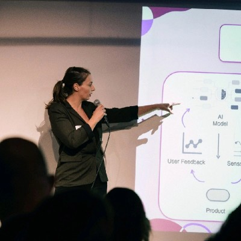

Now I'm (almost!) a PhD in Applied Data Science and Artificial Intelligence — so I suppose that dream came true. I work on probabilistic programming, Bayesian methods, and causal inference: teaching machines to reason honestly about what they don't know. Along the way I've also been learning how to actually run a business, through AIDEN. Next dream: build something of my own.

I started in physics, drawn to the idea that the world could be described precisely. Somewhere between a bachelor's degree and a master's thesis on stochastic population models for exploited marine species, I fell for a messier and more honest kind of precision: models that admit what they don't know.
That's what my PhD is about. I work on probabilistic programming, Bayesian neural networks, causal inference, evolutionary computation, and formal verification — usually all four at once, on the same problem. I'm part of the team behind DeGAS, a gradient-based approach to optimizing probabilistic programs without sampling, and I spend a lot of my time thinking about how to make uncertainty something you can compute with, not just talk around.
In 2025 I spent three months as a visiting researcher at TU Wien's Trustworthy Cyber-Physical Systems group. I'm based in Trieste — a city that, appropriately, sits right on the line between two worlds.
Silver medallist at the Italian Championship. A different kind of research: years of small, repeated corrections until something becomes instinct.
Selected for the Trieste–Osaka Innovation Gateway, a business & technical mission run by the Innovators Community Lab — a first step toward turning "next dream" into a plan.
My master's thesis modelled exploited marine species along the Adriatic. Trieste's relationship with the sea shows up in my work more often than you'd expect.